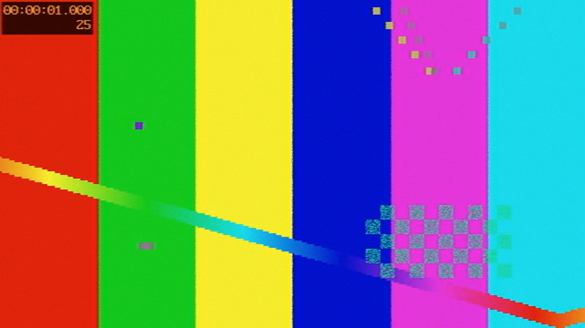
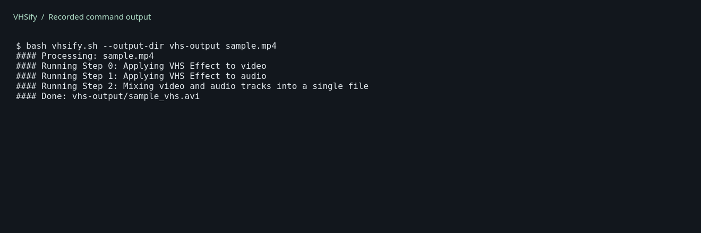

Picture and sound
Combine softened chroma, grain and horizontal jitter with filtered audio and tape noise.
Video / analogue effects / Evilchuck666
Turn video into a worn-out VHS recording with chroma bleed, grain, tracking jitter and tape hiss. Small FFmpeg and SoX scripts for Linux, macOS and Windows.
Bash / PowerShell · FFmpeg · SoX
In use



Combine softened chroma, grain and horizontal jitter with filtered audio and tape noise.
Export UTVideo and PCM float in AVI, ready for your next editing or encoding step.
Process files individually or from a list, with output kept separate from your source.
Get started
Download the scripts for your operating system and install FFmpeg and SoX. Follow the README for shell requirements, input lists and output options.
SHA-256 checksums ↓ · Release notes & all downloads on GitHub ↗